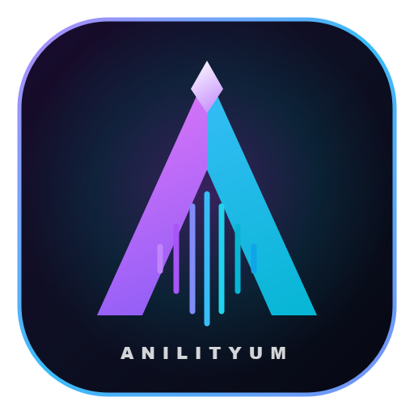

AnilityumPAR
YouTube & Önizleme
AnilityumPAR
Dinlemek için şarkı seç
Ana Sayfa
Ara
Tara
Kitaplık
ŞU ANDA ÇALAN
AnilityumPAR
YouTube
Şarkı seçilmedi
Aramadan veya kitaplıktan bir şarkı seç
0:00
0:00
Şarkı Sözleri
Sıradakiler
Şarkı sözleri yükleniyor...
Çalma Listesine Ekle
Yeni Çalma Listesi
Liste Adı
Oluştur
Ayarlar & API Bağlantıları